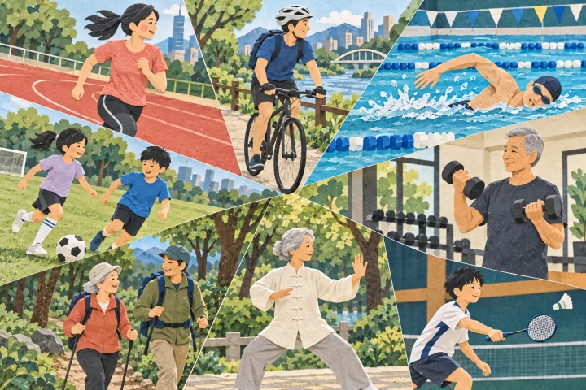

<!doctype html>
<html lang="zh-Hant">
<meta charset="utf-8">
<meta name="viewport" content="width=device-width,initial-scale=1">
<title>Exercise Prescription — GitHub social preview</title>
<style>
*{box-sizing:border-box}body{margin:0;width:1280px;height:640px;background:#f7f6ee;color:#243f33;font-family:system-ui,'PingFang TC','Noto Sans TC',sans-serif}main{padding:58px 64px;display:grid;grid-template-columns:650px 1fr;gap:38px;height:100%}.kicker{font-size:19px;letter-spacing:2px;color:#285575;font-weight:650}h1{font-size:57px;line-height:1.26;letter-spacing:-1px;margin:34px 0 20px}h1 span{box-shadow:inset 0 -.19em #d5ef71}p{font-size:25px;line-height:1.65;margin:0 0 26px}.tags{display:flex;gap:12px;font-size:17px}.tags span{padding:9px 15px;border:1px solid #b6c5bb;background:#fffdf6}.url{font-size:17px;letter-spacing:.2px;margin-top:34px;color:#285575}.aside{align-self:center;transform:rotate(2deg);border:1px solid #b6c5bb;background:#fffdf6;padding:15px;box-shadow:9px 10px 0 #e4e2d3}.aside img{display:block;width:100%;height:300px;object-fit:cover}.aside p{font-size:18px;margin:20px 10px 10px}.fine{font-size:15px;color:#56665d;margin-top:24px}
</style>
<main><section><div class="kicker">OPEN SOURCE · 運動衛教工具</div><h1>填寫健康條件<br>帶走<span>運動處方</span></h1><p>規則式 FITT-VP 處方與中文 PDF<br>AI 行動建議，依需要再啟用</p><div class="tags"><span>不需金鑰即可開始</span><span>手機可用</span><span>MIT License</span></div><div class="url">github.com/keanu77/exercise-prescription-recommendation</div><div class="fine">僅供衛教，不能取代個別醫療評估</div></section><section class="aside"><p>從你的條件出發<br>建立可理解、可帶走的計畫</p></section></main>
</html>
